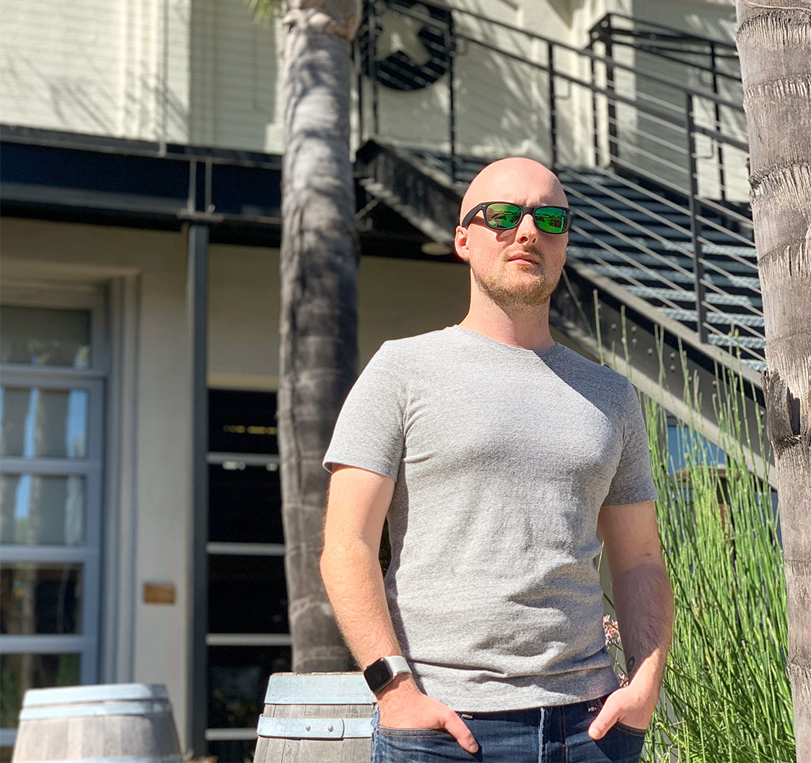

This page is about me, personally, as well as my history writing professionally. To view my portfolio, head here.
Born and raised in Indiana, I spent most of my youth living in Middlebury. It's a small town of a few thousand people, about a three-hour drive east from Chicago. I was a competitive swimmer for ten years, spending four of those years on the high school swim team, winning the conference championship all four years.
I earned my Bachelor of Science in Media and Public Communication from Purdue University Fort Wayne, with a minor in Media Production. I spent three years writing and editing for the student newspaper, The Communicator. While there, I earned a spot as an Online Pacemaker Award finalist from the Associated Collegiate Press. During my senior year, I worked as a marketing intern for local non-profit Arts United, where I spearheaded the weekly newsletter and assisted with event organization.
After graduating in 2012, I spent four months as an editorial intern at Lifehacker where I wrote numerous articles covering technology, lifestyle, and DIY topics, many of which have received hundreds of thousands of views. I was also responsible for the daily news roundup series Remains of the Day.
Following my stint as a Lifehacker intern, I spent around seven years writing thousands of articles for various online technology publications, including SlashGear, Digital Trends, GottaBeMobile, How-To Geek, and Review Geek.
In 2019, I moved to California where I work full-time at iFixit, starting off as an editorial writer, and transitioning to technical writing. I'm now the Director of Content Operations, overseeing the day-to-day and behind-the-scenes operations of the editorial, video, and technical writing teams.
I love getting my hands dirty with DIY projects around the house and in the garage, and I get a bit antsy if I go a few days without picking up a tool. I enjoy riding motorcycles, hiking, and sightseeing, but I also enjoy spending just as much time indoors, hanging out with my wonderful wife, Kim, and our two cats, Opal and Olive.